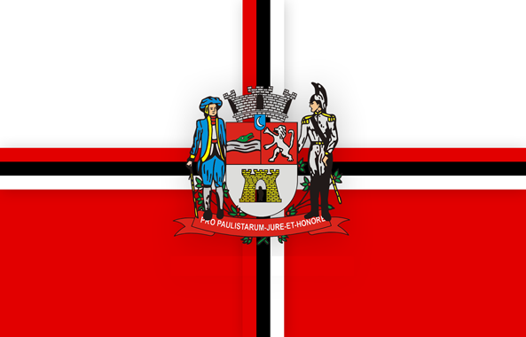

Jacareí - Geodex

Município de Jacareí
-
Populacão: 237.119 pessoas
-
Área: 464,272km²
-
Fundação: 27 de Dezembro 1652
-
Distância da Capital: 80km
Jacareí é uma cidade localizada no estado de São Paulo, Brasil. Sua história remonta ao período colonial, com a chegada dos bandeirantes e a ocupação da região. A cidade teve um papel importante no desenvolvimento econômico da região, principalmente devido à agricultura e à indústria. Atualmente, Jacareí é um importante centro industrial e comercial, com destaque para a produção de alimentos, metalurgia e automobilística. A cidade também possui um rico patrimônio histórico e cultural, com diversos monumentos, igrejas e casarões preservados que contam a história do município.